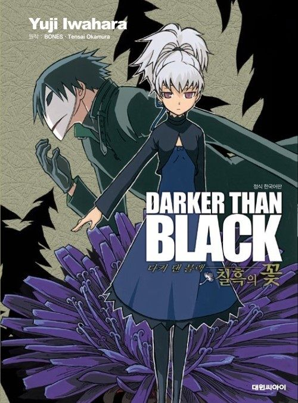

DARKER THAN BLACK 시리즈의 코믹스. 작가는 애니메이션판의 캐릭터 디자이너이기도 한 이와하라 유지. 총 네권으로 완결되었다[1]. 이전에도 다른 작가가 그린 만화판이 하나 있었지만 반응이 매우 안좋았기 때문에 그 존재를 모르는 사람들이 많다. 원화가가 직접 만화 작업을 한 드문 케이스.[2] 그덕분에 원작 애니와 위화감이 거의 없다. 이와하라 유지에게는 원화를 담당했던 작품의 만화를 그리게 된 두번째 작품이다.[3] DARKER THAN BLACK -흑의 계약자-와 DARKER THAN BLACK -GAIDEN- 사이의 일을 다루고 있다. 시점은 도쿄 익스플로전이 일어난 지 몇 주 이후. 애니메이션 1기(흑의 계약자) → 칠흑의 꽃 → 애니메이션 외전(GAIDEN)의 순서대로 본다면, 칠흑의 꽃을 볼때 다소 괴리감을 느낄 수 있다. 계약자와 돌인데도 불구하고, 헤이와 인의 감정 표현이 지나치게 많기 때문. 또한 헤이가 애니메이션에 비해 말이 상당히 많은데, 아무래도 애니메이션보다 정적인 코믹스이기 때문에 연출을 위해 어쩔 수 없이 대사와 감정 표현을 늘린 듯 하다. 그리고 유성의 제미니에서 칠흑의 꽃에서만 등장한 인물이나 사건에 대한 언급이 전혀 없기 때문에, GAIDEN에 비하면 애니메이션과 직접적으로 관계되어 있다는 느낌이 옅은 편이다. 12월 15일에 대원씨아이에서 정식 발매되었다. 그런데 번역이 오경화. 읽는데 문제될만한 장면은 없지만 새턴링이 사탄링이라고 번역되었다. 사탄의 반지 그외에도 여러 인명에 자잘한 차이가 있다.
